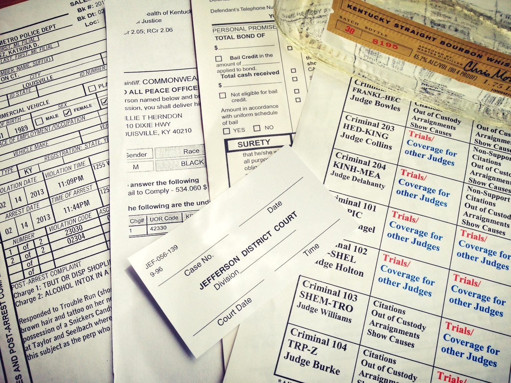

“Main fellowship project”
Code for America Louisville fellowship team
The problem

The criminal justice system is complicated. Most defendants see the judge for only a few minutes at a time, and are discharged with court-ordered requirements for follow-ups.
When those orders are not understood or followed, the citizens risk entering a cycle of trouble. Individuals who miss court dates often have warrants issued for their arrest – complicating their lives, resulting in unnecessary jail time, and adding extra work for administrators.
The information that people receive is often written down on hard-to-understand forms or easy-to-lose reminder cards. Outside of visiting the Hall of Justice, there is no single point of contact or place for citizens to inquire about their status and their next steps.
When people fail to appear for court, costs are incurred in all parts of the criminal justice system. Missed court dates mean judges, prosecutors, defense and support staff must re-process a missed hearing; warrants must be produced; law enforcement must arrest and transport defendants to jail; and the corrections must book and detain them.
Statistics
In Jefferson County, Ky:
Failure to appear rate: 18% Throughout 2012, defendants failed to appear (FTA) in court 18% of the time.
F.T.A. warrants: 522 in a week During the week of 12 June 2012, 522 bench warrants were issued for failing to appear in court.
Jail occupancy: 112% In the second week of March 2013, the main Louisville Metro jail complex hosted 1,521 inmates, with a rated capacity of 1,353 beds.
Our goal
To build a system that helps people resolve their court cases by reminding them of upcoming court dates, providing respectful and helpful instructions, and explaining the consequences of the available choices. By using modern technology and good design, we can help people fulfill their court-ordered responsibilities and stay out of trouble.
Why this idea?
- Nothing like this exists yet. While systems to remind people of court dates exist, we want our project to help the defendants resolve their cases by providing timely and relevant information in a clear, respectful manner.
- The ripple effect. When defendants fail to appear in court, it affects judges, prosecutors, defense attorneys, law enforcement, and corrections. Decreasing failure to appear (FTA) rates has the potential to reduce burden for all parts of the criminal justice system.
- Building upon prior research and contributing to it. Existing research suggests that court date notification can result in reductions in the FTA rates. We are reviewing that research, and we hope to collaborate on and learn from Arnold Foundation’s upcoming pilot study that will test various variants of court reminders.
- Opening up the data. In Kentucky, court date information is primarily stored in a statewide database maintained by the Administrative Office of the Courts. We hope to connect with AoC databases and pave the way for other stakeholders to more efficiently use the wealth of information contained in that central system.
- Using modern standards and technologies. We are looking at this project as an opportunity to use and showcase modern technologies, open-source methodologies, and data interchange standards.
- Reusability. Failures to appear are a national problem. Our solution, if successful, could be replicated in other counties and states.
- Extensibility. In the future, the system could be further extended to include more information (warrants, fees) and more functionality (e.g. supporting the involvement of family or community members).
Prior research and projects
- Multnomah County, Ore. The automatic system calling defendants resulted in 17–41% reduction in the FTA rate and $1.55 million estimated annual cost efficiency in FY07.
- Coconino County, Ariz. Volunteers calling misdemeanor defendants and reminding them of their cases in 2006 resulted in 4–19% reduction in the FTA rate.
- Jefferson County, Colo. The court notification volunteer calls in 2005 resulted in 52% reduction in the FTA rate.
- Lincoln, Neb. The 2009–2010 pilot study using postcards resulted in 11–35% reduction in the FTA rate.
- King County, Wash. In 2000, volunteers calling defendants in Dictrict Court resulted in 1–22% reduction in the FTA rate.
- Arapahoe County, Colo. The volunteer phone call system started in 2006 resulted in 54-62% reduction in the FTA rate in 2009, and a corresponding “decrease of 6,839 jail bed days at an approximate cost of $68 a day, which translates into a savings of $465,052 of taxpayer dollars.”
Specific goals and metrics
Failures to appear can impact victims and the willingness of witnesses to testify, result in longer jail stays for defendants on future offenses and loss of revenues from unpaid fees and fines, add to frustration that “the system doesn’t work,” and undermine the integrity of the justice system.
Therefore, reducing FTA rates is one of our two primary objectives. It could help cut down cost and time spent on low-risk offenders and allow for more resources to be devoted to dealing with major issues and violent crime.
The other primary objective is to help citizens understand court orders and the processes of justice by providing easy-to-follow, customized, actionable instructions.
Challenges
- Reaching to and understanding the defendants. In order to build a system helping people, we need to understand them and their needs.
- Issues of trust and social stigma. How can we frame the collection of personal information (such as cell phone numbers or emails) in a way that’s effective and eases the concerns about privacy?
- Choosing appropriate technology. Our choice of text messages, email, Facebook, and/or a separate website will depend on defendants’ access to and understanding of those technologies.
- Access interfaces to databases. We need to architect a failure-proof, easy-to-maintain interface to the existing databases.
Timeline
We will be working on this project throughout the fellowship year, with the first development cycle finishing in late April/early May of 2013.
Updates
- April 1, 2013: Fellowship update №1 slide deck